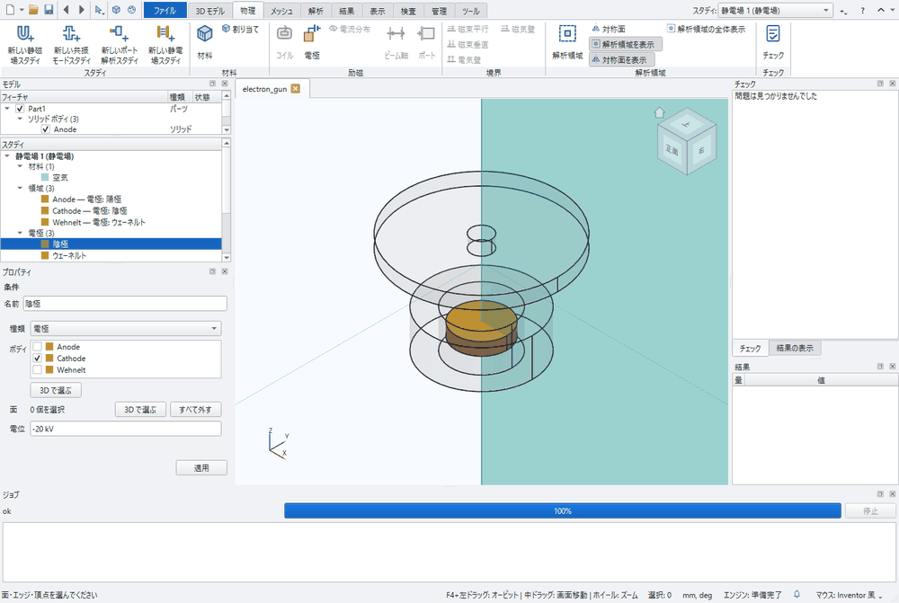
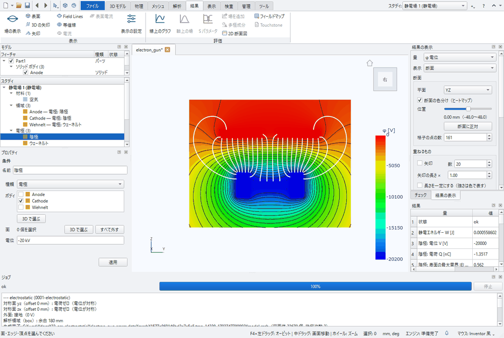
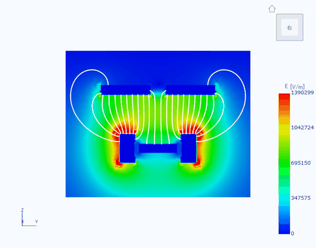
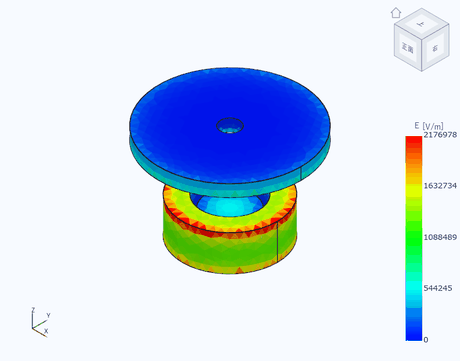
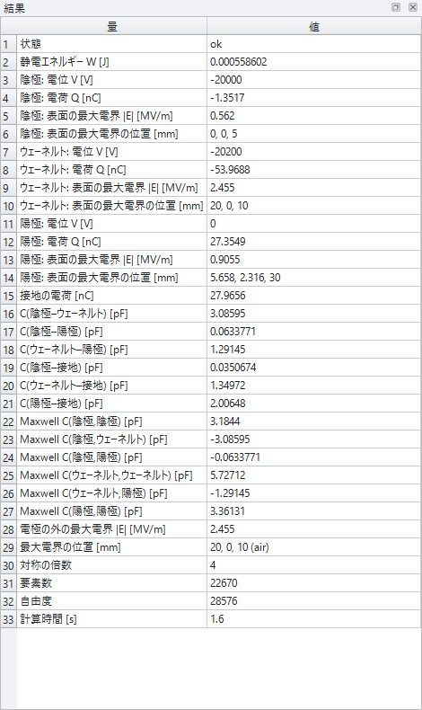
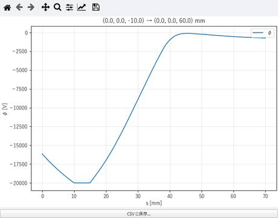
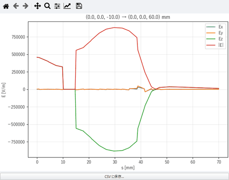

第 23 章
静電場解析
静電場 この章では、静電場のスタディを説明します。電極の電位がつくる電位と電場を求め、電極の電荷・電極間の容量・表面の最大電界を出します。電極の決め方、誘電体、外面と対称面の境界、結果の表と表示、例題（電子銃の電極）、精度の目安の順です。題材は examples/electron_gun.emrm です。
23.1 静電場のスタディ
電極の電位を決めて、そのまわりの電位 φ を有限要素法で解きます。真空・誘電体の中に電荷が無いとして、∇·(ε0εr∇φ) = 0 を 2 次の曲線の節点要素で解き、E = −∇φ、D = ε0εrE を求めます。形状のまわりの空気は、静磁場と同じく自動で作ります。
リボンの［物理］タブ → ［スタディ］パネル → ［新しい静電場スタディ］で作ります。最初から材料「空気」・解析領域・メッシュ・解析の設定が入っています。
スタディのブラウザのフォルダは、材料・領域・電極・解析領域・対称・メッシュ・解析の設定・結果です。
静電場のスタディで使える条件は［電極］だけです。コイルなどの静磁場の条件は押せません。


23.2 電極
電極は、電位を決めた導体です。ボディを選んで電極にすると、そのボディの表面がその電位になります。
3D ビューで、電極にするボディを選びます（Ctrl で複数）。
リボンの［物理］タブ → ［励磁］パネル → ［電極］をクリックします。選んだボディの電極ができ、プロパティ パネルにフォームが出ます。
［名前］に電極の名前（例
陰極）、［電位］に電位（例-20 kV）を入れます。［適用］を押します。
ボディを選ばずに押すと、フォームの［ボディ］の一覧でチェックを入れて選べます（［3D で選ぶ］でも選べます）。
［電位］は単位を付けて書けます（
500 V・-20 kV）。文書のパラメータを使った式（-V_acc）も書けます（第 10 章）。0 V の電極は、接地した導体です。つながった 1 つの導体は、1 つの電極にまとめます。違う電極のボディが接していると、解析がエラーになります。
電極のボディはメッシュに残り、中の節点もすべてその電位に固定されます（中の電場は 0）。中の要素も要素数に数えます。電極のボディの材料は、メッシュの大きさだけに効きます。
スタディのブラウザの［領域］では、電極のボディの行に「電極: 名前」と出ます。
面の電極
3D ビューで面を選んでから［電極］を押すと、選んだ面がその電位になります。ボディごと電極にするときは、面を選ぶ必要はありません（ボディの面を一緒に選んでも、ボディの電位に含めます）。面の電極にできるのは、解析の外面にある面だけです。たとえば、解析領域を消して真空をボディで作ったときの、真空のボディの外面（容器の壁）です（下の節）。ボディの間の面（自動の空気に囲まれた面）は電極にできません。
23.3 材料と誘電体
静電場の材料の［種類］は、空気と誘電体です。
| 種類 | 欄 | 使う所 |
|---|---|---|
| 空気 | （εr = 1） | 真空・空気。材料を選んでいないボディも空気です |
| 誘電体 | ［比誘電率］ εr | 絶縁物（セラミック・樹脂・絶縁油など） |
静電場では、材料のフォームに比誘電率だけが出ます（比透磁率・誘電正接は出ません）。
誘電体と空気の境では、D の法線の成分が連続し、E が εr の比で飛びます。電極と誘電体と真空が会う所（三重点）は、電場が強くなりやすい場所です。
どの材料にも［メッシュの大きさ（0 = 全体の値）］があります。電極の角・ギャップなど、電場の強い所を細かくします。
23.4 外面と対称面の境界
解析領域（形状のまわりの自動の空気）の作り方は、静磁場と同じです（第 18 章）。その外面の境界は、リボンの［解析］タブ → ［設定］パネル → ［解析の設定］の［外面の境界］で選びます。
| 外面の境界 | 意味 | 使う所 |
|---|---|---|
| 電荷ゼロ（n·D = 0）（既定） | 電気力線が外面に沿う。開いた空間の近似（解析領域を十分大きくする） | まわりに導体の無い電極 |
| 接地（0 V） | 外面の電位が 0 V（接地した容器） | 真空容器の中の電子銃・電極 |
電荷ゼロの外面だけで、電極が 1 つのときは、電位がどこも同じになり、電場は 0 です（チェックが警告します）。外面を接地にするか、電極を足します。
0 V でない電極が、接地の外面・接地の対称面に接していると、解析がエラーになります。
真空の容器をボディで作るときは、スタディのブラウザの［解析領域］の行を消します（Del）。自動の空気を作らず、ボディの外面が解析の外面になり、上の［外面の境界］が付きます。容器の壁の面は面の電極にもできます。［解析領域］を押すと、解析領域を作り直します。
対称面の境界
対称面（［対称面］）の境界は、次の 2 つです。
| 境界 | 面の向こうの電極（鏡像） | 使う所 |
|---|---|---|
| 電荷ゼロ（電位が対称）（既定） | 同じ電位の同じ電極 | 電子銃・同軸の電極など、形も電位も対称なとき |
| 接地（電位が反対称） | 逆の電位の別の電極（面の上は 0 V） | +V と −V の静電偏向器の中央の面 |
対称面の板は、電荷ゼロが青緑、接地が灰色です。電極が対称面で切れているときは、残す側の半分だけを解き、向こうの半分は鏡像として自動で入ります。
23.5 静電場の結果
結果の表示の操作は第 17 章のとおりです。静電場で表示できる量は、［φ 電位］・［|E| 電界の強さ］・Ex・Ey・Ez・［|D| 電束密度］・［比誘電率 εr］です。
φ を表示して［等値線］を重ねると、等電位線になります。［Field Lines］は、静電場では電気力線（E の力線）を描きます。φ の色の範囲は、最小から最大までです。
［表面］では、電極の表面を、電極のすぐ外の |E|（表面の電界）で塗ります。放電の起きやすい所が分かります。
［線上のグラフ］は、φ を表示しているときは φ のグラフ、ほかの量のときは E の成分と |E| のグラフを出します。
［フィールドマップ］は、規則格子の φ・E・D を CSV か HDF5 に書き出します（電子の軌道の計算などに使います）。






結果の表
右の［結果］の表には、次の値が出ます。値はどれも、対称面で切ったモデルを全体に換算した値です。
| 量 | 内容 |
|---|---|
| 静電エネルギー W [J] | W = ½ ∫ E·D dV（全体） |
| 電極ごとの電位 V・電荷 Q | Q は電極の表面の電荷（電極を囲む面の D の流束）。単位は値に合わせて nC・pC などを選びます |
| 表面の最大電界 |E| とその位置 | 電極の表面のすぐ外の |E| の最大 [MV/m] と、その点の座標 [mm] |
| 接地の電荷 | 接地の外面・対称面の電荷（接地があるときだけ）。電極と接地の電荷の合計は 0 です |
| 容量 C | 電極が 1 つのとき。C = Q / V（電極と接地の間） |
| C(a–b)・C(a–接地) | 電極が 2 つ以上のとき。電極間の容量（下の節） |
| Maxwell C(a,b) | 電極が 2 つ以上のとき。Maxwell の容量行列（下の節） |
| 電極の外の最大電界 |E| とその位置 | 電極の外（空気・誘電体）の全体の最大。括弧の中は領域の名前（air は自動の空気） |


電極間の容量
電極が 2 つ以上のとき、結果の表に電極間の容量が出ます。電極を節点とする等価回路の、コンデンサの値です（部分容量。回路シミュレータに入れる値です）。求めるのに追加の解析は要りません。
| 行 | 内容 |
|---|---|
| C(a–b) | 電極 a と電極 b の間のコンデンサ。間に別の電極があって電場が届かない組は 0 です |
| C(a–接地) | 電極 a と接地（接地の外面・対称面）の間のコンデンサ。接地があるときだけ出ます |
| Maxwell C(a,b) | Maxwell の容量行列 Qa = Σb C(a,b) Vb の係数。対角は正、対角の外は 0 か負です |
電極の電荷は、この回路のとおり Qa = Σb C(a–b) (Va − Vb) + C(a–接地) Va です。Maxwell の容量行列とは、C(a–b) = −C(a,b)、C(a–接地) = a の行の和 の関係です。エネルギーは W = ½ Σ QaVa です。
接地の無い 2 つの電極（コンデンサ）の容量は、C(1–2) そのものです（C = Q / V）。
電極をつないで 1 つの端子にしたときの端子の間の容量は、端子をまたぐコンデンサの和です。例題で、陰極とウェーネルトをつないだ端子と、陽極と接地をつないだ端子の間の容量（パルス電源から見た電子銃の容量）は、C(陰極–陽極) + C(ウェーネルト–陽極) + C(陰極–接地) + C(ウェーネルト–接地) = 2.74 pF です。
23.6 例題: 電子銃の電極
examples/electron_gun.emrm は、陰極・ウェーネルト・陽極の 3 つの電極の例です。ビームの軸は z です。YZ・ZX の電荷ゼロの対称面で 1/4 モデルにし、外面は接地（真空容器）にしてあります。要素の大きさは 3 mm です。
| 電極（ボディ） | 形 | 電位 |
|---|---|---|
| 陰極（［Cathode］） | 円板 φ20 × 5 mm（z = 0〜5 mm） | −20 kV |
| ウェーネルト（［Wehnelt］） | 円筒 外径 40・内径 24 mm（z = −5〜10 mm） | −20.2 kV（陰極より 200 V 低い） |
| 陽極（［Anode］） | 円板 φ60 × 5 mm（z = 30〜35 mm）、中央に φ8 の穴 | 0 V |
例題を開き、リボンの［解析］タブ → ［実行］パネル → ［実行］をクリックします。10 秒ほどで終わり、結果が φ の断面で出ます。
［結果の表示］のパネルで、［重ねるもの］の［等値線］と［Field Lines］を入れ、［断面に正対］を押します（上の図）。
リボンの［結果］タブ → ［評価］パネル → ［線上のグラフ］をクリックし、［始点］の z を
-10、［終点］の z を60にします（x・y はどちらも0）。［OK］で、ビームの軸の上の φ のグラフが出ます。量を |E| にして、もう一度［線上のグラフ］を押します。軸の上の E のグラフが出ます。




結果の表では、電荷は陰極 −1.35 nC・ウェーネルト −54.0 nC・陽極 +27.4 nC・接地 +28.0 nC で、合計は 0 です。表面の最大電界は、ウェーネルトの前の外側の角（半径 20 mm・z = 10 mm）の 2.46 MV/m です。
23.7 精度の目安
| 問題 | 量 | 解析解との差 |
|---|---|---|
| 誘電体（εr = 4）を挟んだ平行平板 | 容量・電界・D の連続 | 丸め誤差（10−12） |
| 同心球（内球の半径 10 mm・1000 V、外球の内径 25 mm・0 V。要素 2.5 mm、1/8 モデル） | 容量 C = 4πε0ab/(b − a) = 1.854 pF | 0.013 % |
| 同上 | 内球の表面の電界 0.1667 MV/m | 0.04 % |
| 重ねた 3 枚の平板（間隔 0.2 m・0.5 m、1 m 角） | 電極間の容量 C = ε0A/d、間に電極を挟んだ組は 0 | 10−10 |
| 対称面で半分にしたモデルと全体のモデル | 電荷・容量・エネルギー | 10−10 |
23.8 今の版でできないこと
浮いた電極（電位が決まっていない導体）
空間電荷（電子のビームの電荷がつくる電場）と電子の軌道は、電子銃のスタディで解きます（第 24 章）
ボディの間の面（誘電体の表面に付けた膜など）の面の電極